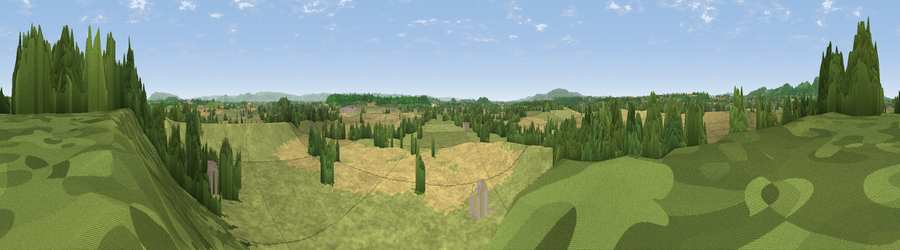

Viewpoint near Eldersfield
#21931 in England · top 53% of its area beats it · near EldersfieldWhere it is
The exact computed spot (SO 79175 31475). Click the marker for map links.
The view, rendered

A 360° render of this exact spot computed from the terrain model, tree cover and land cover — summer colours, afternoon light, calibrated against photographs of famous viewpoints. Real trees, hedges and buildings will differ in detail.
The panorama
Grey silhouette: terrain skyline in each direction (720 bearings, Earth curvature and refraction included). Dashed green: skyline with trees (+15 m) and buildings (+8 m) as obstacles. Blue strip: how far the ground is visible on each bearing.
Where the view opens
Wedge length = distance to the farthest visible ground on that bearing (vegetation-aware). Rings at 10, 25 and 50 km.
What fills the view
63% grassland · 22% cropland · 13% woodland · 1% built-up
Angular shares of the visible panorama (visual magnitude), not map area. Landscape diversity 0.41 (0–1 Shannon).
Key numbers
More beautiful places nearby
The staircase of upgrades: each row has a higher view potential than everything closer. Driving times are estimates from straight-line distance, calibrated against real road routing — check an actual route before setting out.
| Place | Direction | Drive | Score |
|---|---|---|---|
| Viewpoint near Eldersfield | ESE · 2 km | ~5 min | 55.3 |
| Corse Wood Hill | SE · 4 km | ~8 min | 60.7 |
| Viewpoint near Redmarley d'Abitot | W · 4 km | ~9 min | 67.3 |
| Corse Grove Hill | SE · 5 km | ~11 min | 67.6 |
| Chase End Hill | NW · 5 km | ~11 min | 81.5 |
| Ragged Stone Hill | NNW · 6 km | ~13 min | 82.5 |
| Midsummer Hill | NNW · 7 km | ~14 min | 83.0 |
| Millennium Hill | NNW · 9 km | ~17 min | 86.9 |
51.98134, -2.30462 · source: screening · position refined by local search. Computed location — check access rights before visiting.